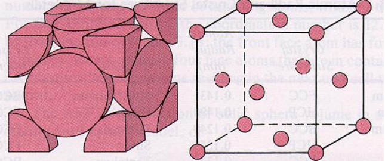
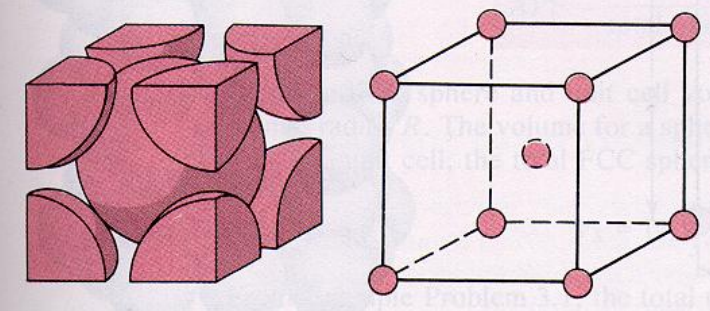
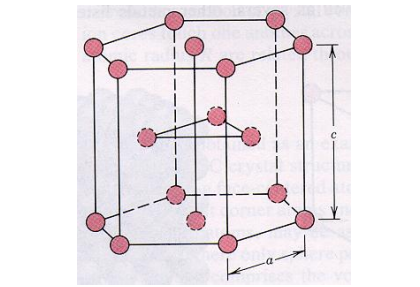

Una estructura cristalina es la forma sólida en la que pueden ordenarse y empaquetarse los átomos, moléculas o iones. Estos arreglos son altamente ordenados y presentan patrones de repetición en tres dimensiones (x, y, z). El estudio de estas estructuras es lo que conocemos como cristalografía.
Las propiedades mecánicas de los materiales están intrínsecamente relacionadas con su estructura cristalina. Es posible distinguir un material cristalino de uno amorfo mediante el análisis del espectro de difracción de rayos X, ya que los materiales cristalinos exhiben picos de alta intensidad en el espectro.
La mayoría de los metales son FCC, BCC o HCP, conceptos que se verán más adelante, permitiendo tener las propiedades de los metales como: alta densidad, dúctiles, maleable, brillantes, opacos, tener punto de fusión altos, sólidos en condiciones normales y buenos conductores de calor.
Existen dos tipos de sólidos cristalinos:
- Monocristal: conformado por un solo cristal.
- Policristal: conformado por dos o más cristales.
Estructuras cristalinas
Redes de Bravais
En geometría y cristalografía, las redes de Bravais se refieren a un patrón infinito de puntos discretos dispuestos de manera que su estructura permanece inalterada bajo un conjunto específico de traslaciones. En la mayoría de los casos, también se observa esta invariabilidad frente a rotaciones o simetría rotacional. Estas características aseguran que todos los puntos en una red de Bravais compartan la misma perspectiva de la disposición general. Por tanto, se puede afirmar que los puntos en una red de Bravais son intercambiables.
Utilizando la teoría de grupos, se ha demostrado que existen únicamente una red de Bravais en una dimensión, cinco redes en dos dimensiones y un total de catorce variaciones diferentes de redes en tres dimensiones.
propiedades en comun
usos en materiales
descripcion
hcb bcc fcc
FCC

Face centered cubic, por sus siglas en inglés, es una celda unitaria cuando los átomos están ubicados en las esquinas y cada cara del cubo de la celda unitaria.
Existen 4 átomos en una sola celda unitaria y los átomos se tocan a lo largo de las diagonales de las caras. Su párametro de red consiste en un valor a y equivale a la longitud de la arista entre átomos.
Su fórmula para encontrar su parámetro de red, a partir del radio atómico es:
Algunos materiales con esta estructura son: Aluminio, Cobre, Niquel, Plata y Oro.
La fórmula para encontrar su factor de empaquetamiento atómico es:
BCC

Body centered cubic, por sus siglas en inglés, es una celda unitaria cuando los átomos están ubicados en las esquinas y en el centro del cubo de la celda unitaria.
Existen 2 átomos en una sola celda unitaria y el plano cerrado empaquetado corta la unidad del cubo en mitad diagonalmente. Su párametro de red consiste en un valor a y equivale a la longitud de la arista entre átomos.
Su fórmula para encontrar su parámetro de red, a partir del radio atómico es:
Algunos materiales con esta estructura son: todos los metales alcainos, Bario, Radio, Vanadio, Niobio, Tantalio, Cromo, Molibdeno, Wolframio e Hierro en estado alfa.
La fórmula para encontrar su factor de empaquetamiento atómico es:
HCP

Hexagonal Close Packed, por sus siglas en inglés, son las celdas que contienen 17 átomos, sin embargo hay 6 átomos por celda unitaria, su base es un hexágono con átomos en cada esquina y en el centroide del mismo, hay un átomo; adicionalmente existe un triángulo en mitad de su arista c conteniendo otros 3 átomos.
Existen 2 parámetros de red, a y c, los cuales representan el valor de la arista del hexágono y la altura de la celda respecticamente.
Para encontrar su volumen se usa la fórmula:
Algunos materiales con esta estructura son: Escandio, Titanio, Cobalto, Zinc, Itrio, Circonio, Tecnecio, Rutenio, Cadmio, Gadolinio, Terbio entre otros.
La fórmula para encontrar su factor de empaquetamiento atómico es:
Defectos cristalinos
Un defecto cristalino se refiere a cualquier alteración en la disposición periódica de la estructura en un sólido cristalino. El cristal perfecto es una representación teórica en la que las diversas entidades (como moléculas, iones o átomos neutros) están organizadas de manera uniforme y regular, extendiéndose infinitamente. No obstante, en la realidad, cualquier cristal exhibe desviaciones con respecto a este modelo ideal, en parte debido a la ausencia de cristales de tamaño infinito.
Estos defectos en la estructura cristalina son los responsables de ciertas características observadas en la materia, tales como la capacidad de deformarse plásticamente, la resistencia ante la fractura, la conductividad eléctrica, el color y la capacidad de difusión, entre otros.
Existen dos tipos de clasificaciones:
Según sean intrínsecos o extrinsecos:
- Intrínsecos: originales del matarial, por ejemplo el NaCl existen estos defectos aleatorios interpretados en faltas de iones de sodio y cloro.
- Extrínsecos: presentandos impurezas, por ejemplo, cuando se presenta contaminación de un químico ajeno a los componentes propios de la red, en el caso del rubí y la esmeralda existen impurezas de cromo (III) proporcionando el color rojo y verde.
Según su dimensión: conformado por dos o más cristales.
- Puntuales: de 0 dimensiones, afectan a un punto de red, perturbando únicamente a los vecinos más próximos.
- Lineales: se extienden en una dirección y afectan a una fila de puntos de red.
- De superficie: se extienden en dos dimensiones.
- Volumétricos: se extienden en tres dimensiones.